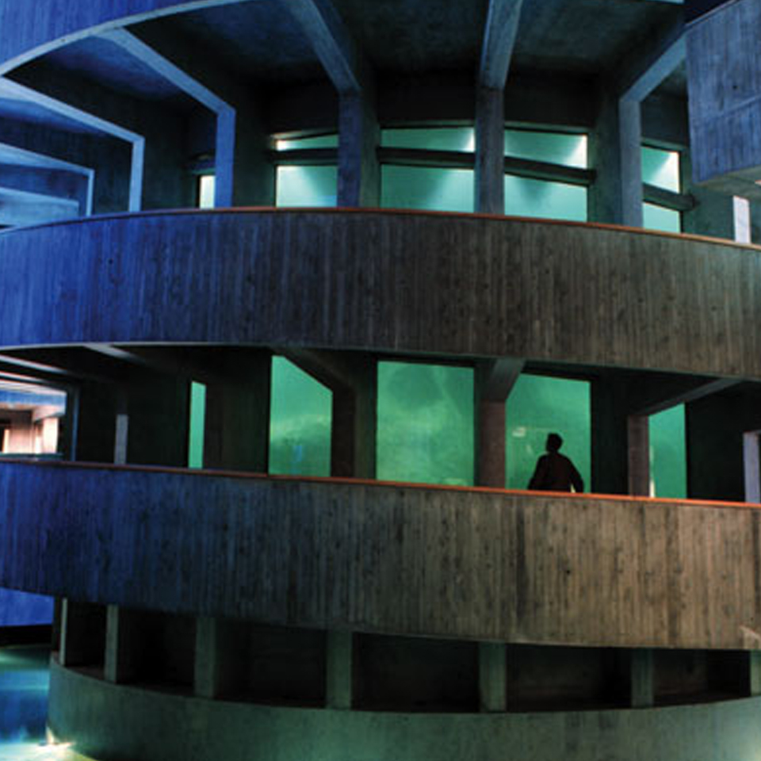
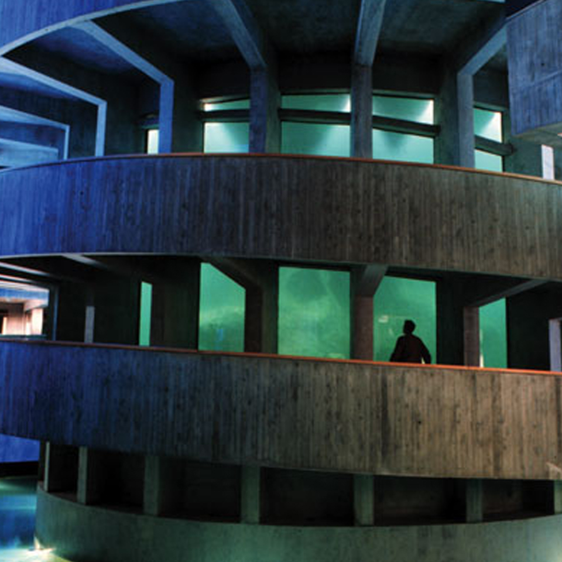

Our Story
Neill and Natalie met online in 2010, and became fast friends over emails. Before long, they both had feelings for each other, and decided to date long distance. When Natalie graduated in 2014, she moved to San Antonio, TX so they could be together at last. After a year of living together in Texas, during a trip to up North, Neill proposed on a beautiful sunny day at Nubble Lighthouse in Maine, and the rest is history!
Neill - A huge nerd with a serious outside, but a soft goofy inside. He currently works as a software engineer at Rackspace. He enjoys reading, video games, viewing wildlife from the comfort of his home, and baking with Natalie.
Natalie - A huge nerd with a goofy outside, and a goofy inside. She currently works as a graphic designer at Vysk. She enjoys spoiling their two guinea pigs, crafts like crochet and embroidery, cooking, and backseat driving Neill’s video games.


The Ceremony
Where: The ceremony and reception will be held at Fruitlands Museum in Harvard MA. Directions can be found here.
The Ceremony: Guests may begin arriving at 4:30pm. The ceremony begins at 5pm; if the weather is good, it will be outdoors in a small field overlooking a valley. If the weather does not hold, we will be married in the tent on the property. Natalie’s Godfather, Mark Soltys will be officiating. A champagne toast, dinner and dancing will follow the ceremony, ending at 10pm. There will be a cash bar.
Things to Note: The field, land around the tent, and the floor inside the tent is uneven, so flat shoes and low, chunky heels are best. Also, although the tent is heated, the nights in October can be cold in MA, so bring a sweater or jacket for the evening.


Hotels
A block of rooms has been reserved at a discounted rate at the Residence Inn Boston in Westford. It is an extended stay hotel so the rooms are fairly spacious and have small kitchenettes. For more information, visit the website here.
Since many of you will be visiting New England for the first time, I’d recommend visiting Boston, there are many hotels there to choose from, and the city is very easy to explore by foot, train or bus. I have stayed in many hotels there, but the Nine Zero downtown is very modern and has a great location, and the Hyatt Regency in Cambridge has a great view of the Charles River. Westford is about 45 minutes north of Boston for reference.
 



Sights to See
Attractions:The Museum of Fine Art, Boston MA (http://www.mfa.org/) Isabella Stewart Gardner Museum, Boston MA (http://www.gardnermuseum.org/home) Peabody Essex Museum, Salem, MA (http://www.pem.org/) Prudential Center (http://skywalkboston.com/) Salem Witch Museum, Salem MA (https://www.salemwitchmuseum.com/) Museum of Science, Boston MA (https://www.mos.org/) Plimoth Plantation, Plymouth MA (https://www.plimoth.org/) Norman Rockwell Museum, Stockbridge MA (https://www.nrm.org/) Mark Twain House, Hartford CT (https://www.marktwainhouse.org/) Newport Mansions, Newport RI (http://www.newportmansions.org/) Boston Public Library (http://www.bpl.org/central/tours.htm) New England Aquarium, Boston MA (http://www.neaq.org/) Paul Revere House (https://www.paulreverehouse.org/) Old State house (http://www.bostonhistory.org/) Faneuil Hall (http://www.faneuilhallmarketplace.com/) Fenway Park (http://boston.redsox.mlb.com/bos/ballpark/
Entertainment: Blue Man Group (https://www.blueman.com/boston/about-show) Broadway in Boston (http://boston.broadway.com/) Boston Symphony Orchestra (https://www.bso.org/) Boston Ballet (https://www.bostonballet.org/home.aspx) Sculler’s Jazz Club (http://www.scullersjazz.com) Celtics/Bruins/Sox game (not sure of schedules)
Dining in Westford: Paul’s Diner (Neighborhood diner) Karma (Asian fusion, great sushi) Bamboo (Classic chinese buffet) Burton’s Grill (Casual chain) British Beer Company (British pub, pub food & beer) 99 Grill (Below average local pub chain, don’t go here)
Dining in Boston: The Friendly Toast (cheerful breakfast place, long wait at popular brunch times) Mike & Patty’s (hole in the wall breakfast gem) Flour Bakery (local chain with French pastries) Martin’s Coffee Shop (Small greasy spoon diner) The Neighborhood Restaurant (Breakfast with a Portuguese twist) Legal Sea Foods (local seafood chain) Brasserie JO (upscale French, good brunch) Aquitaine (Upscale French) Bricco (Modern Italian) Bacco Ristorante & Bar (Romantic Italian, handmade pasta) Penguin Pizza (artsy pizza & beer in bar setting) Picco (slightly fancier artsy pizza in restaurant setting) Citizen Public House (pub with great food & great whiskey selection) Mike’s Pastry (Famous local pastry shop, don’t worry the line moves fast) Cafe Vittoria (Old world style cafe, great atmosphere) JP Licks (local ice cream chain) Boloco (Nutella milkshake is why it’s on the list, burritos are decent)

Our Registry
Your presence at our wedding is the greatest gift, no gift is required. However, if you wish to honor us with a gift, our registry can be found:
 here
here